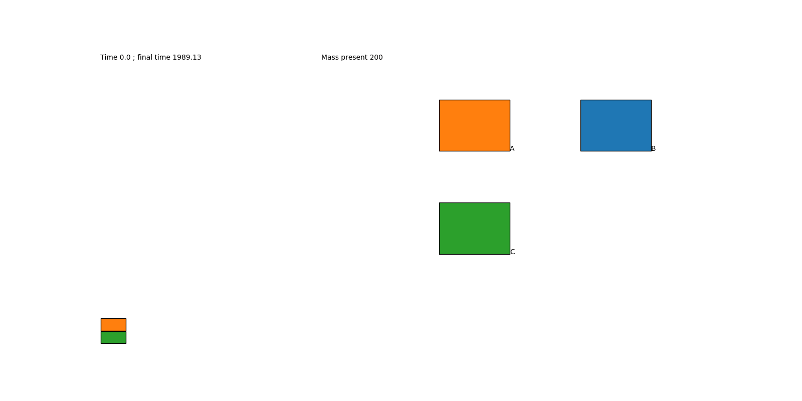

Module KaSaAn.scripts.kappa_trace_movie_maker
Make a movie out of a set of snapshot files, and save it to disk.
usage: kappa_trace_movie_maker
[-h] Show detailed help.
[-d DIRECTORY] Directory where snapshots are located, default <.>
[-m {mass,count,size}] What dictates area; default is mass.
[-o OUTPUT_FILE] File name for saving the movie. If unset, shown.
[-w FIG_WIDTH] Number of inches for the width of the plot. Default value is 16.
[-r XY_RATIO] X to Y ratio of the plot. Default value is 1.
[-s] Rescale each snapshot to use the total plot area?
[-l LEGEND_COLUMNS] Number of columns in the legend. Default value is 2.
[-f FRAME_INTERVAL] Number of mili-seconds between frames in the animation.
[-v] Display information about number of snapshots found.
For example:

Expand source code
#!/usr/bin/env python3
"""
Make a movie out of a set of snapshot files, and save it to disk.
``` {.text}
usage: kappa_trace_movie_maker
[-h] Show detailed help.
[-d DIRECTORY] Directory where snapshots are located, default <.>
[-m {mass,count,size}] What dictates area; default is mass.
[-o OUTPUT_FILE] File name for saving the movie. If unset, shown.
[-w FIG_WIDTH] Number of inches for the width of the plot. Default value is 16.
[-r XY_RATIO] X to Y ratio of the plot. Default value is 1.
[-s] Rescale each snapshot to use the total plot area?
[-l LEGEND_COLUMNS] Number of columns in the legend. Default value is 2.
[-f FRAME_INTERVAL] Number of mili-seconds between frames in the animation.
[-v] Display information about number of snapshots found.
```
For example:
.. image:: ../../img/trace_movie.gif
"""
import argparse
import sys
import matplotlib.animation as animation
import matplotlib.pyplot as plt
from KaSaAn.functions import movie_from_snapshots
def main(args=None):
"""Make a movie out of a set of snapshot files, and save it to disk."""
if args is None:
args = sys.argv[1:]
parser = argparse.ArgumentParser(description=main.__doc__)
parser.add_argument('-d', '--directory', type=str, default='./',
help='Directory where the snapshots are located. These should be named "snapshot.#.ka", i.e.'
' the default naming scheme used by the Kappa Trace Query Language Engine. Default uses'
' current directory.')
parser.add_argument('-m', '--vis_mode', type=str, default='mass', choices=['mass', 'count', 'size'],
help='Specify the type of visualization to render. Default uses mass.')
parser.add_argument('-o', '--output_file', type=str, default='',
help='Optional name of file for saving the movie. If unset, the movie will be shown instead,'
' using a TK window.')
parser.add_argument('-w', '--fig_width', type=int, default=16,
help='Number of inches for the width of the plot. Figure will be 2 times this value wide, with'
' the plot being this value wide and the legend being this value wide.'
' Default value is 16.')
parser.add_argument('-r', '--XY_ratio', type=float, default=1.0,
help='X to Y ratio of the plot. Default value is 1: isometric view.')
parser.add_argument('-s', '--do_not_scale_mass', action='store_true',
help='Rescale each snapshot to use the total plot area? If specified, each snapshot will be'
' viewed using the entire plot area: the amount of mass a pixel will represent will not be'
' consistent across snapshots (unless there is neither creation nor deletion of agents in'
' the model).')
parser.add_argument('-l', '--legend_columns', type=int, default=2,
help='Number of columns in the legend. Increase this number to have more entries per row.'
' Default value is 2.')
parser.add_argument('-f', '--frame_interval', type=int, default=500,
help='Number of mili-seconds between frames in the animation.')
parser.add_argument('-v', '--verbose', action='store_true',
help='Display information about number of snapshots found.')
args = parser.parse_args()
# make the animation
my_animation = movie_from_snapshots(directory=args.directory,
vis_mode=args.vis_mode,
fig_width=args.fig_width,
xy_ratio=args.XY_ratio,
dont_scale_mass=args.do_not_scale_mass,
legend_cols=args.legend_columns,
frame_int=args.frame_interval,
verbose=args.verbose)
# Save to file, or show the figure
if args.output_file:
# Use the ImageMagick writer if a gif was requested; else use the default mpeg writer
if args.output_file[-4:] == '.gif':
my_writer = animation.ImageMagickFileWriter()
else:
my_writer = 'ffmpeg'
if args.verbose:
print('Now saving animation to file <<' + args.output_file + '>>')
my_animation.save(filename=args.output_file, writer=my_writer)
else:
plt.show()
if __name__ == '__main__':
main()Functions
def main(args=None)-
Make a movie out of a set of snapshot files, and save it to disk.
Expand source code
def main(args=None): """Make a movie out of a set of snapshot files, and save it to disk.""" if args is None: args = sys.argv[1:] parser = argparse.ArgumentParser(description=main.__doc__) parser.add_argument('-d', '--directory', type=str, default='./', help='Directory where the snapshots are located. These should be named "snapshot.#.ka", i.e.' ' the default naming scheme used by the Kappa Trace Query Language Engine. Default uses' ' current directory.') parser.add_argument('-m', '--vis_mode', type=str, default='mass', choices=['mass', 'count', 'size'], help='Specify the type of visualization to render. Default uses mass.') parser.add_argument('-o', '--output_file', type=str, default='', help='Optional name of file for saving the movie. If unset, the movie will be shown instead,' ' using a TK window.') parser.add_argument('-w', '--fig_width', type=int, default=16, help='Number of inches for the width of the plot. Figure will be 2 times this value wide, with' ' the plot being this value wide and the legend being this value wide.' ' Default value is 16.') parser.add_argument('-r', '--XY_ratio', type=float, default=1.0, help='X to Y ratio of the plot. Default value is 1: isometric view.') parser.add_argument('-s', '--do_not_scale_mass', action='store_true', help='Rescale each snapshot to use the total plot area? If specified, each snapshot will be' ' viewed using the entire plot area: the amount of mass a pixel will represent will not be' ' consistent across snapshots (unless there is neither creation nor deletion of agents in' ' the model).') parser.add_argument('-l', '--legend_columns', type=int, default=2, help='Number of columns in the legend. Increase this number to have more entries per row.' ' Default value is 2.') parser.add_argument('-f', '--frame_interval', type=int, default=500, help='Number of mili-seconds between frames in the animation.') parser.add_argument('-v', '--verbose', action='store_true', help='Display information about number of snapshots found.') args = parser.parse_args() # make the animation my_animation = movie_from_snapshots(directory=args.directory, vis_mode=args.vis_mode, fig_width=args.fig_width, xy_ratio=args.XY_ratio, dont_scale_mass=args.do_not_scale_mass, legend_cols=args.legend_columns, frame_int=args.frame_interval, verbose=args.verbose) # Save to file, or show the figure if args.output_file: # Use the ImageMagick writer if a gif was requested; else use the default mpeg writer if args.output_file[-4:] == '.gif': my_writer = animation.ImageMagickFileWriter() else: my_writer = 'ffmpeg' if args.verbose: print('Now saving animation to file <<' + args.output_file + '>>') my_animation.save(filename=args.output_file, writer=my_writer) else: plt.show()